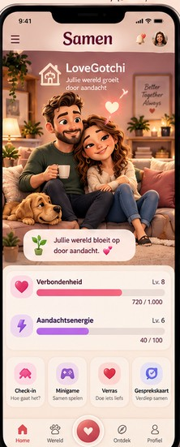
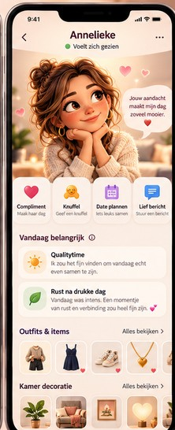
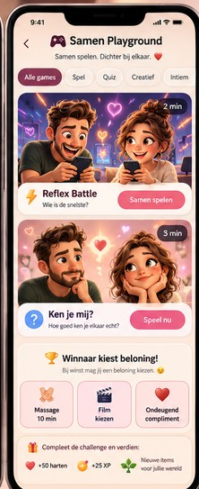
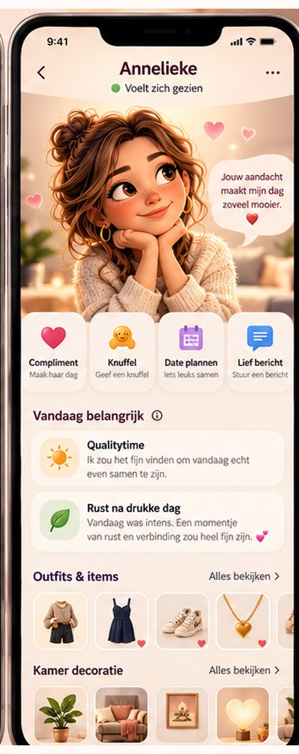
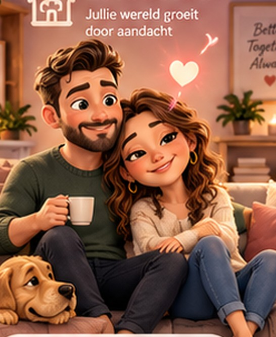
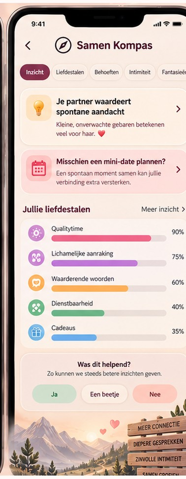
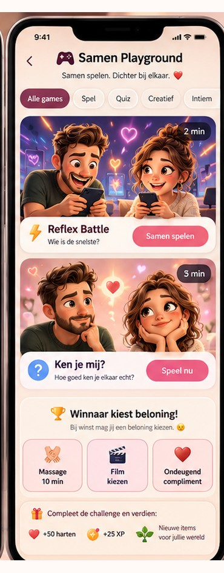
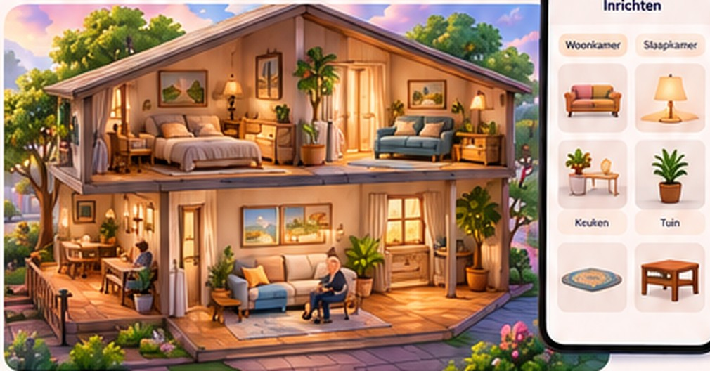
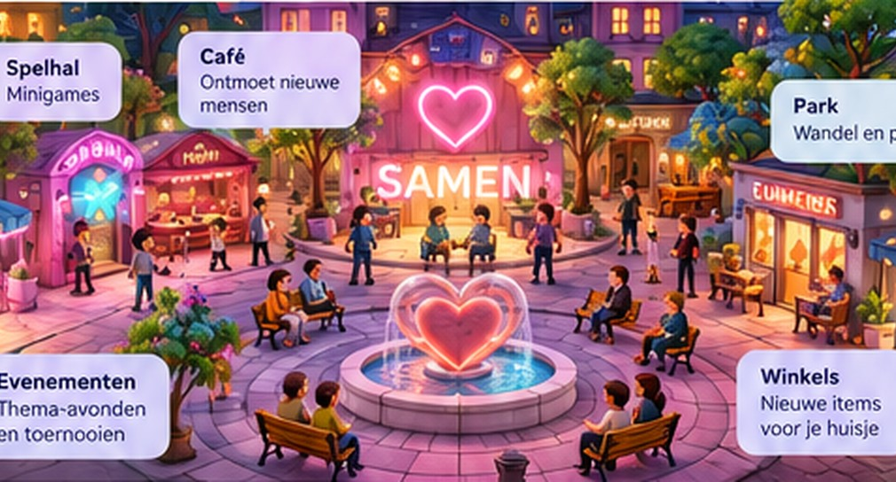
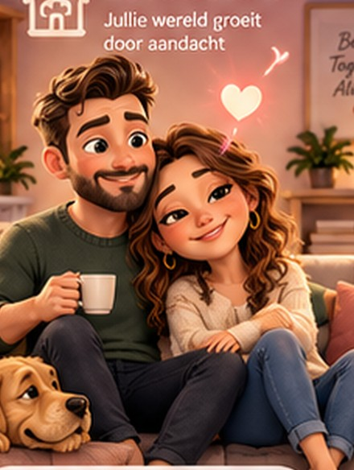

Een warme, speelse digitale wereld waar mensen elkaar op een betekenisvolle manier ontmoeten, samen groeien en ook na jaren blijven ontdekken wat de ander gelukkig maakt.
Vernieuwd appconcept | Oktober 2026
Voor Annelieke – om samen verder te dromen en te ontwikkelen.
De grote gedachte
Eén wereld. Drie hoofdstukken.
Met gepersonaliseerde mini-avatars, een eigen digitaal huis, echte minigames, gesprekskaarten, persoonlijke aandacht en een gezellige virtuele ontmoetingswereld groeit Samen met je mee.
01
Samen Singles — elkaar vinden
Voor volwassenen die een serieuze relatie zoeken. Een persoonlijk Kompas helpt je ontdekken welke waarden, interesses, levensdoelen en verwachtingen je belangrijk vindt. De app stelt passende mensen voor en maakt kennismaken ontspannen via gezamenlijke spellen en betekenisvolle gesprekken.
↓
02
Samen Couples — samen blijven groeien
Partners verbinden hun accounts, maken herkenbare mini-avatars, bouwen een gezamenlijk digitaal huisje en hebben toegang tot dagelijkse check-ins, gesprekskaarten, het Samen Kompas en minigames. Door aandacht, spel en gezamenlijke momenten groeit hun gedeelde wereld.
↓
03
Samen New Chapter — een nieuw hoofdstuk
Als een relatie eindigt, behoudt ieder zijn eigen avatar, persoonlijke voortgang en zelf ingevoerde voorkeuren. Wie dat wil, kan het persoonlijke Kompas opnieuw bekijken en bewust inzetten voor een volgende relatie.
De rode draadElkaar begrijpen wordt iets wat je niet één keer doet, maar op een vrolijke manier blijft doen.
De uitstraling van Samen
Een eerste blik op Samen
Samen voelt als een toegankelijke, warme app met een moderne speelse stijl: zachte kleuren, knusse omgevingen, expressieve 3D-cartoonpersonages, grappige animaties en eenvoudig te begrijpen knoppen.



01 Thuis
Jullie eigen wereld en de snelste weg naar alle dagelijkse functies.
02 LoveGotchi
Jullie persoonlijke mini-avatars en hun expressies.
03 Playground
Minigames, uitdagingen en beloningen.
04 Kompas
Wat jullie voelen, waarderen, wensen en over elkaar ontdekken.
En daaromheen: een sociale wereld
Bezoek elkaars huisjes, vorm teams met bevriende koppels en ontmoet nieuwe mensen op het Samen Plein.
Warm, grappig en herkenbaar: van een lief hartje op de bank tot een uitbundige overwinningsdans.
LoveGotchi
Mini-versies van onszelf
Iedere gebruiker krijgt een eigen avatar: een herkenbare, charmante mini-versie van zichzelf. Een selfie kan dienen als uitgangspunt, waarna kapsel, gezicht, kleding en accessoires naar wens aanpasbaar zijn.

Wat de avatars doen
Glimlachen na een lief bericht of compliment.
Samen een overwinningsdansje doen na een minigame.
Knuffelen of een hartje tonen na een bijzonder moment.
Nieuwe outfits, gezichtsuitdrukkingen en accessoires ontgrendelen.
Samen door het huisje en de virtuele wereld bewegen.
1
Jouw eigen stemming
De persoonlijke stemming van je avatar komt uit je eigen check-in. Jij bepaalt hoe je je laat zien.
2
Verbondenheidsenergie
Een aparte, speelse meter laat zien welke leuke activiteiten en aandacht jullie samen hebben opgebouwd.
3
Jullie blijven groeien
Door samen te spelen en aandacht te geven verzamel je nieuwe expressies en unieke items.
De avatars groeien mee met jullie verhaal en geven de app een herkenbaar gezicht.
Jullie eigen digitale huisje
Van lege kamer naar ons eigen plekje
Ieder koppel begint met een gezellig huisje dat ze samen inrichten en uitbreiden. Het wordt een persoonlijke plek die jullie stijl, humor en herinneringen laat zien.

Wat je kunt inrichten
Woonkamer: banken, kussens, tafels, lampen, planten en schilderijen.
Slaapkamer: bedden, verlichting en romantische decoratie.
Keuken en eethoek: tafels, stoelen, mokken en sfeervolle details.
Tuin of balkon: bloemen, vuurkorf, hangmat en lichtslingers.
Extra kamers: een spelkamer, leeshoek, hobbyruimte of trofeeënkamer.
Thema's: een warme herfstwoning, feestdagen, romantische stijlen of bijzondere seizoenen.
Van stickerboek naar echte inrichting
Het oorspronkelijke idee van een stickerboek wordt een veel tastbaarder verzamelsysteem. Elke achievement levert een decoratief object of ander vrijspeelbaar item op.
De Charmeur
Een gouden fotolijst
De Revanchekoning
Een arcadetrofee
Qualitytime-helden
Een gezellige sfeerlamp
De Mondige Medaille After Dark
Een ondeugend gouden pronkstuk
Olympisch Matrasworstelen After Dark
Een grappige minitrofee
Zo vertelt de inrichting iets over jullie gezamenlijke avonturen en mooie momenten.
Elke dag een klein moment
Hoe voel jij je vandaag?
Beide partners krijgen op hun eigen ingestelde moment een vriendelijke herinnering om een korte dagelijkse check-in te doen.
Jouw check-in
Hoe gaat het?
Hoe voel jij je vandaag?
Hoeveel energie heb je?
Heb je behoefte aan rust, aandacht, gezelligheid of intimiteit?
Wil je iets aan je partner laten weten?
Als jullie beiden klaar zijn
Vandaag samen
Jij: zin in qualitytime.
Je partner: moe na een drukke werkdag.
Samen stelt een rustig avondje voor, met een klein, liefdevol moment.
EEN KLEIN GEBAAR
Een gedeeld dagbeeld
Wanneer beide partners hun check-in hebben ingevuld, ontstaat een gedeeld dagbeeld met alleen wat ze vrijwillig met elkaar delen.
Persoonlijk ritme
Ieder stelt een eigen herinneringsmoment in. Een tip uit het Kompas helpt je te reageren op wat je partner fijn vindt.
Het dagelijkse ritueel duurt kort, maar kan uitmonden in een gesprek, een knuffel, een glimlach of een spontaan gebaar.
Het Samen Kompas
Onthouden wat de ander nodig heeft
Dit onderdeel ontstond uit onze ervaring met liefdestaal-gesprekskaarten. Die kaarten leverden interessante gesprekken op, maar belandden daarna in de kast. Samen houdt de inzichten levend.

1
Ontdekken
Via vragen en spelletjes leren partners wat voor de ander belangrijk is.
2
Onthouden
Antwoorden vormen een persoonlijk behoeftenprofiel, met keuzes over wat wordt gedeeld.
3
In de praktijk brengen
Subtiele herinneringen stellen liefdevolle acties voor die bij de ander passen.
4
Bijstellen
Korte vervolgvragen en feedback houden het profiel actueel.
“Je partner vindt het fijn als je spontaan een avondje voor jullie plant. Misschien een idee voor dit weekend?”
“Na een drukke werkdag waardeert je partner vaak eerst een moment rust.”
“Jullie willen graag vaker iets nieuws samen ondernemen. Zullen we een date-idee kiezen?”
Ieder houdt controle over de eigen antwoorden en wat de ander ervan mag zien.
Interactieve gesprekskaarten
Een gesprek dat doorwerkt
Gesprekskaarten worden een terugkerend spel, met vragen die beide partners apart of samen kunnen beantwoorden.
Liefde & waardering
Wanneer voel jij je écht gezien?
Dagelijks leven
Welke kleine gewoonte geeft jou rust?
Communicatie
Wat helpt jou als we een lastige dag hebben?
Dromen
Wat zouden we samen ooit nog willen beleven?
Intimiteit
Wat is voor jou een fijn moment van nabijheid?
Fantasieën
Welke wens of fantasie zou je eens willen bespreken?
Zo werkt het: na het beantwoorden bekijk je overeenkomsten, verschillen en verrassende antwoorden. Belangrijke inzichten kunnen in het Kompas worden bewaard. Later kan Samen op een passend moment een herinnering of een nieuwe verdiepingsvraag aanbieden.
Kies jullie stemming
RomantischGrappigSerieusFilosofischOndeugend
Samen Playground
Echte minigames voor de lol
Korte interactieve spellen, ontworpen voor twee partners die op dezelfde bank zitten of ieder op hun eigen telefoon spelen.

Reflex Battle
Wie reageert het snelst op het juiste moment?
Memory Match
Wie onthoudt de meeste kaarten?
Ken je mij?
Wie weet het meeste over de behoeften en voorkeuren van de ander?
Liefdesduel
Een korte, speelse best-of-five wedstrijd.
Samen puzzelen
Los coöperatief een uitdaging op.
Truth, Dare or Dream
Ontdek elkaar via vragen, opdrachten en wensen.
Bij het spelen verdien je hartjes, XP, trofeeën of decoratieve objecten — in competitieve én coöperatieve uitdagingen.
De beloningenpot & achievements
Van gewonnen duel naar nieuwe inrichting
Voor een spel spreken partners samen af welke beloningen leuk zijn. De winnaar mag na afloop kiezen uit een aantal vooraf gekozen mogelijkheden.
De winnaar mag kiezen
Massage
Tien minuten ontspannen
Film kiezen
De film voor vanavond
Ontbijt op bed
Rustig wakker worden
Mini-date
Laat er een organiseren
Taakje uit handen
Eén klus minder
Een berichtje
Lief of ondeugend
01 Afspreken
Kies samen welke beloningen in de pot gaan.
02 Spelen
Daag elkaar uit of speel samen een minigame.
03 Kiezen
De winnaar kiest; een beloning is altijd vrijwillig en af te stemmen.
Virtuele prestaties krijgen een plek in de kamer
Ze verschijnen als meubels, kunstwerken, decoratie, lichtjes of trofeeën in jullie huisje.
De Charmeur
Een gouden fotolijst
De Revanchekoning
Een arcadetrofee
De Gedachtenlezer
Een nieuw verzamelobject
Zo levert een spel zowel een echt leuk moment als zichtbare groei in de digitale wereld op.
Samen Buurt
Op bezoek bij bevriende koppels
Met Samen Couples Plus kunnen bevriende koppels elkaar toevoegen en een virtueel bezoek brengen aan elkaars woning.

Tijdens een bezoek kun je
De kamers, inrichting en verzamelobjecten bewonderen.
Een complimentje of hartje achterlaten.
Een klein virtueel cadeautje sturen.
De gezamenlijke trofeeënkast bekijken.
Vanuit het huisje een minigame-uitdaging versturen.
Meedoen aan themaweken en inrichtingswedstrijden.
Jullie bepalen wie er langskomt
Alleen jullie zelf, uitgenodigde vrienden of — wanneer die functie wordt aangeboden — een bredere community.
Privé blijft privé
Persoonlijke relatievragen, stemming en intieme informatie blijven gescheiden van wat bezoekers in het huisje zien.
Samen vs. Samen
Twee koppels tegen elkaar
Vier spelers. Twee teams. Eén gezamenlijke overwinning. Bevriende stellen die allebei Samen Couples Plus gebruiken, kunnen het tegen elkaar opnemen.
Jullie team
850
Teampoints
Vriendenteam
720
Teampoints
2 TEGEN 2
Spelvormen
Live Clash
Vier telefoons, live scores en korte duelrondes.
Ken je koppel?
Welk duo kent zijn eigen partner het beste?
Teamwork Challenge
Samen een puzzel of spelopdracht oplossen.
Vriendenleague
Een besloten klassement met een wisselbeker.
Couples Tournament
Een weekend- of maandcompetitie met meerdere bevriende stellen.
De winnaars verdienen bijvoorbeeld een speciale trofee, outfit of thema-item. Stellen kunnen onderling ook een gezellige real-life beloning afspreken — zoals dat het andere stel de volgende spelletjesavond organiseert.
Zo wordt Samen een sociale game die je ook met vrienden wilt delen.
Samen Singles
Serieuze verbinding voor volwassenen
Samen Singles is bedoeld voor mensen die echt op zoek zijn naar een duurzame relatie.
Het vertrekpunt is een persoonlijk Kompas met levensdoelen, waarden, toekomstwensen, kinderwens, dagelijkse gewoontes, humor, interesses en verwachtingen.
Hoe een ontmoeting werkt
1
Stel je Kompas samen
Vul je persoonlijke Kompas en relatie-intenties in.
2
Ontdek passende kandidaten
Een beperkt aantal voorstellen, met uitleg over de overeenkomsten.
3
Maak kennis
Via vragen en gezamenlijke minigames.
4
Praat verder
Als jullie allebei nieuwsgierig zijn.
5
Ontmoet elkaar in het echt
Plan bij wederzijdse interesse een ontmoeting in het echte leven.
De app helpt mensen inhoudelijke overeenkomsten, verschillen en echte gespreksonderwerpen te ontdekken. Het speelse contact laat ook ervaren hoe je met elkaar communiceert en samenwerkt. Foto's en andere profielgegevens worden gedeeld volgens de keuzes van de gebruiker.
Mensen ontmoeten elkaar eerst als persoonlijkheid. Humor, warmte en nieuwsgierigheid doen de rest.
Het Samen Plein
Een virtuele ontmoetingswereld
Geïnspireerd door de gezellige sociale wereld van Habbo Hotel ontstaat een moderne virtuele ontmoetingsplek voor volwassenen. Je bezoekt deze wereld met je eigen herkenbare avatar.

Het Café
In een ontspannen omgeving nieuwe mensen ontmoeten.
De Spelhal
Minigames starten met andere singles of stellen.
De Gesprekskamer
Meer persoonlijke vragen stellen en iemand beter leren kennen.
Het Park
Rondlopen, praten en aan activiteiten deelnemen.
Events en thema-avonden
Bijvoorbeeld een spelletjesavond of een bijeenkomst rond gedeelde interesses. Gezellig, verzorgd en levendig, met aandacht voor een respectvolle en veilige community.
Het Samen Plein brengt online ontmoeting en echte verbinding bij elkaar.
Van single naar stel
Twee avatars worden een team
Wanneer twee singles elkaar vinden, kunnen ze hun afzonderlijke accounts aan elkaar koppelen en samen overstappen naar Samen Couples.
1
Ontdekken
Passende mensen leren kennen via het Kompas.
↓
2
Samen spelen
Minigames, vragen en ontmoetingen.
↓
3
Afspreken
Elkaar ook buiten de app leren kennen.
↓
4
Verbinden
Gezamenlijk een huisje bouwen en samen verder spelen.
Ieders persoonlijke avatar, favoriete items en eigen voortgang kunnen mee naar de gedeelde wereld. Vanuit het gezamenlijke huis starten de dagelijkse check-ins, het Kompas en alle koppelactiviteiten.
Zo groeit de app mee van de eerste kennismaking naar een langdurige relatie.
Samen New Chapter
Je eigen verhaal blijft van jou
Verandert de relatie, dan blijft het persoonlijke account van iedere partner bestaan.
Het Samen Kompas kan helpen om opnieuw bewust te bekijken welke levensdoelen en relatiebehoeften belangrijk zijn. Wie later weer wil daten, kiest zelf welke actuele persoonlijke gegevens en voorkeuren opnieuw voor matching worden gebruikt.
Persoonlijke regie
Mijn gegevens
Zelf ingevoerde interesses, persoonlijke voorkeuren, eigen avatar en voortgang blijven van jou.
Ons gedeelde verhaal
Gedeelde herinneringen en gesprekken hebben afzonderlijke regels voor toegang en beheer.
Mijn nieuwe keuze
Je bepaalt zelf welke eigenschappen je opnieuw voor matching wilt inzetten.
Mijn privacy
Zo heeft ieder regie over het eigen verhaal en de eigen privacy.
Een nieuw begin, met meer inzicht in jezelf en ruimte om opnieuw verbinding te vinden.
After Dark
Een eigen soort humor
Samen bevat een optionele 18+-modus voor stellen, met romantische vragen, flirterige uitdagingen, fantasieën en humor die helemaal bij het koppel past.
After Dark
De oorspronkelijke grap over een sticker wordt een verzamelobject in het huisje.
De Mondige Medaille
Een gouden, ondeugend pronkstuk voor het huisje.
Olympisch Matrasworstelen
Een grappige minitrofee voor de prijzenkast.
Drie instelbare sferen
Romantisch
Lieve vragen, warme decoraties en intieme verrassingen.
Flirterig
Speelse opdrachten, ondeugende vragen en grappige uitdagingen.
Ongegeneerd fout
Ondeugende humor, bijzondere titels en hilarische decoratie.
Beide partners bepalen samen welke volwassen onderwerpen en spelvormen ze willen gebruiken. De persoonlijke wensen en privé-informatie blijven onder hun eigen controle.
En ja: die verdiende sticker wordt nu een heuse decoratie voor ons huisje. ;-)
Verdienmodel
Eén aankoop voor twee
Bewust toegankelijk: een complete basisapp voor twee mensen, met optionele extra's voor liefhebbers.
Samen Couples
€ 9,99
eenmalig per koppel
Twee accounts
LoveGotchi en eigen huisje
Check-ins en Kompas
Basisgesprekskaarten en minigames
Beloningen en vrijspeelbare inrichting
Samen Couples Plus
€ 19,99
per jaar per koppel, boven op Basis
Huisjes van andere koppels bezoeken
2-tegen-2-duels en vriendenleague
Extra games en themakamers
Speciale decoraties
Evenementen
Voor serieuze singles
Samen Singles — gratis
Eigen profiel, een selectie passende ontmoetingen en kennismakingsspelletjes.
Samen Singles Plus
€ 4,99 per maand of € 29,99 per jaar — extra ontmoetingsmogelijkheden, uitgebreidere filters, extra minigames en evenementen.
Belangrijk principe: één partner kan Samen Couples kopen en de ander gratis uitnodigen. Beide partners hebben daarna toegang tot de volledige basiservaring. Die blijft ook zonder Plus langdurig leuk en bruikbaar.
Alle bedragen zijn conceptprijzen die voor de lancering worden getest en eventueel aangepast.
Veiligheid, vertrouwen en persoonlijke regie
Vertrouwen vanaf het eerste ontwerp
Omdat Samen over relaties, emoties en soms zeer persoonlijke onderwerpen gaat, zijn vertrouwen en privacy vanaf het eerste ontwerp belangrijk.
1
Eigen account
Ieder heeft een eigen account en controle over het eigen profiel.
2
Bewust delen
Antwoorden uit het Kompas worden alleen met de partner gedeeld volgens duidelijke keuzes.
3
Extra afgeschermd
Intimiteit en fantasieën krijgen extra afgeschermde instellingen.
4
Instelbaar sociaal
Huizenbezoeken en vriendschappen zijn instelbaar.
5
Veilige ontmoetingen
Dating en publieke ruimtes krijgen leeftijds- en profielcontroles, moderatie en mogelijkheden om te blokkeren of te melden.
6
Zorgvuldig beheer
Gegevens worden beheerd met aandacht voor de AVG en de regels van de appstores.
7
Netjes ontkoppelen
Bij het ontkoppelen van accounts blijven persoonlijke gegevens gescheiden van gezamenlijke gegevens.
Een gezellige wereld waarin gebruikers graag verblijven en vertrouwen hebben in het delen van persoonlijke informatie.
Ontwikkelpad
Eerst de magie voor twee, dan de wereld
Een groeipad waarin elk nieuw onderdeel voortbouwt op een sterke en gezellige basiservaring.
FASE 1
Samen Couples
De eerste complete koppelervaring: check-ins, het Kompas, gesprekskaarten, avatars, huisje, basisinrichting, beloningen en de eerste minigames.
FASE 2
Samen Social & Couples Plus
Bevriend raken met andere koppels, elkaars huisjes bezoeken, 2-vs-2-minigames, besloten competities, extra decoraties en evenementen.
FASE 3
Samen Singles
Persoonlijk matchen op basis van inhoud, kennismakingsspelletjes en het Samen Plein. Singles kunnen uiteindelijk als koppel hun accounts koppelen en in dezelfde vertrouwde app doorgroeien.
Later uitbreidbaar
Nieuwe minigamesThemakamercollectiesSeizoensuitdagingenVerdiepende gespreksreeksenSociale evenementenVerbeterde persoonlijke suggesties
Voor Annelieke
Zullen we dit samen verder dromen?
Het mooiste aan dit idee is dat het uit onze eigen gesprekken komt: de liefdestaalkaarten die we ooit speelden, de wens om elkaar beter te blijven begrijpen en vooral de gekke grappen die we samen maken.

WAT VIND JIJ?
1. Welke functie zou jij het liefst meteen gebruiken?
2. Welke minigames lijken jou het leukste om samen te spelen?
3. Hoe zou ons digitale huisje eruit moeten zien?
4. Welke vragen moeten absoluut in het Kompas en de gesprekskaarten?
5. Welke grappige achievements of decoraties zou jij bedenken?
6. Wat zou jij nog aan het idee willen toevoegen?
Mijn favoriete gedachte
Wat begon met een gesprekskaart, een grappige opmerking over een sticker en het idee van een digitaal huisdiertje, is nu een hele wereld waarin mensen elkaar kunnen ontmoeten, samen kunnen lachen en elkaar ook na jaren blijven verrassen.
Samen — omdat liefde ook gewoon heel erg leuk mag zijn.
Conceptdocument voor bespreking en verdere ontwikkeling. De illustraties zijn visuele concepten; definitieve appschermen en functionaliteiten worden tijdens de ontwikkeling vastgesteld.